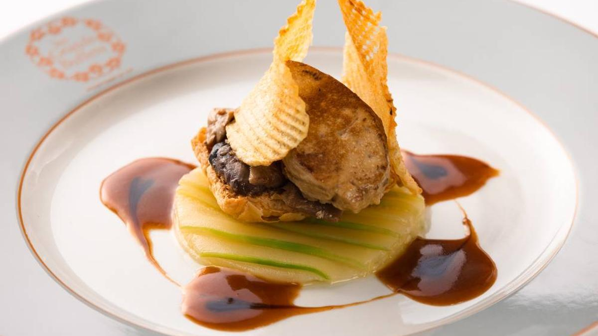
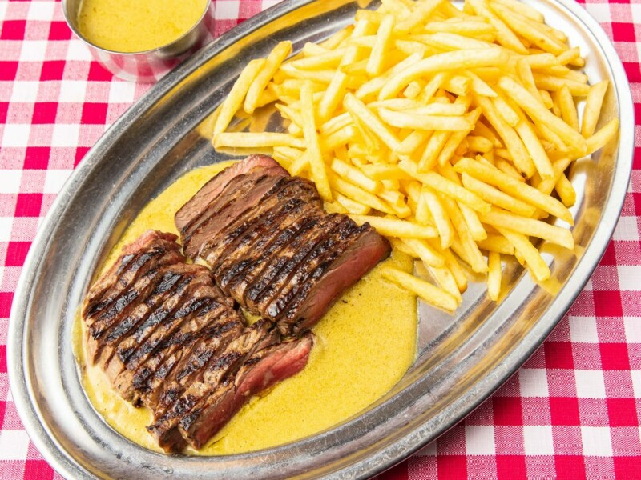
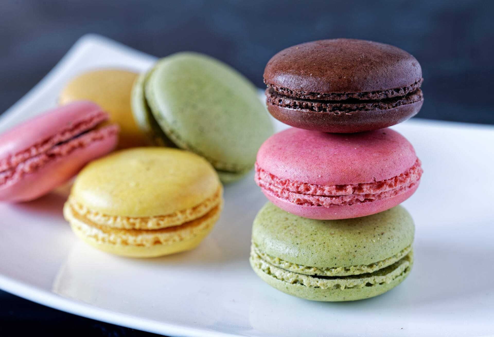
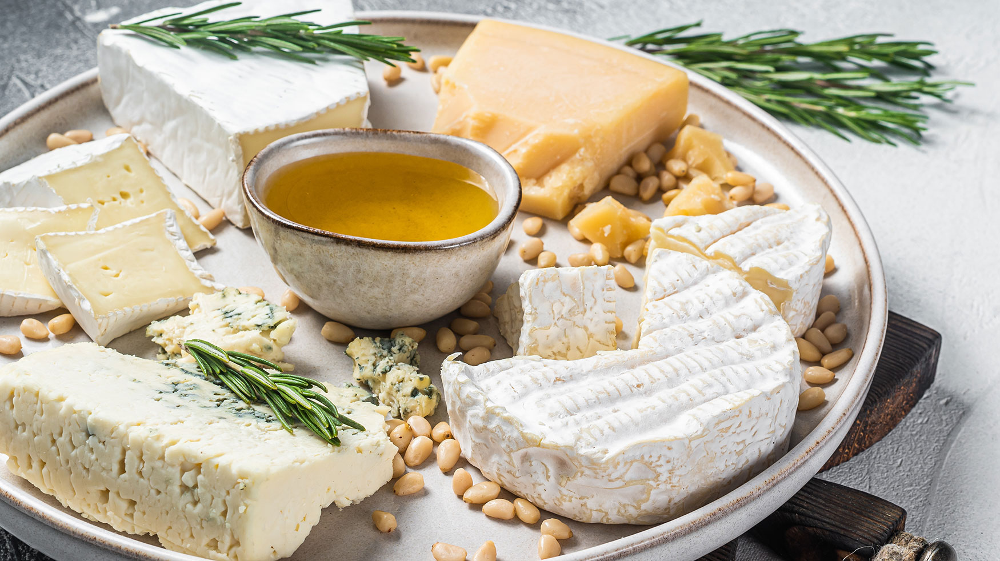

Gastronomía de París
Explora los sabores únicos de París, desde su alta cocina hasta sus irresistibles dulces. Descubre algunos de los platos más icónicos de la ciudad.
Platos Típicos

Foie Gras
Un clásico de la alta cocina francesa.

Entrecot
Entrecot con salsa y patatas fritas.

Macarons
Dulces coloridos y exquisitos.

Tabla de Quesos
Una selección de los mejores quesos franceses.
Recetas Populares
Croissants
Aprende a preparar croissants perfectos con esta receta casera. Ver receta.
Quiche Lorraine
La clásica quiche de Lorraine explicada paso a paso. Ver receta.
Macarons Caseros
Consigue el equilibrio perfecto con esta guía de cómo preparar uno de los dulces franceses más famoso. Ver receta.
Sopa de Cebolla
Elaboración tradicional de la sopa de cebolla francesa. Ver receta.